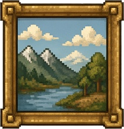

示例合集 · 01
4 / 4
一句话记住
已存档
现在的 AI，就是一种
从大量数据里学会规律
、
再拿规律去干活的电脑程序。
这是入门版的说法，说的是现在最常见的 AI。
▶ 聊天只是 AI 的一种
你打字提问
它打字回答
你平时用的聊天 AI，是 AI 的一种用法：
你打字提问，它打字回答。
AI 能做的远不止聊天。

NEXT ▶
接下来每天讲一个词，一步步讲到聊天 AI 是怎么工作的。
来源：IBM · John McCarthy · Google
■ ■ ■ ■